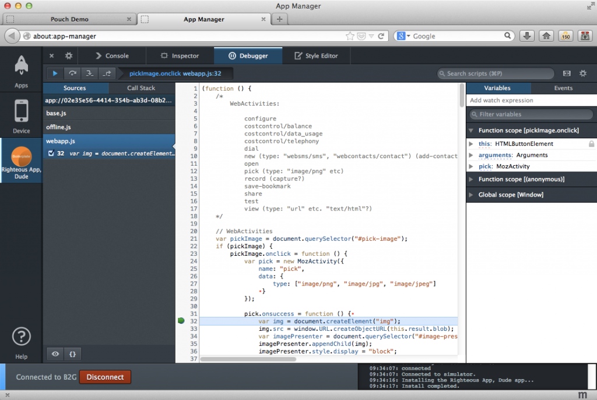
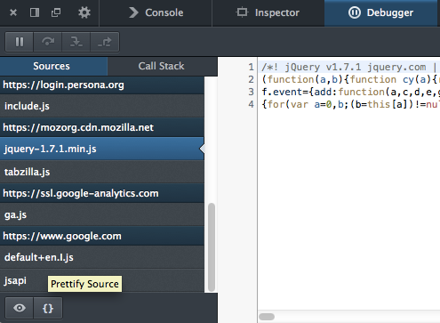
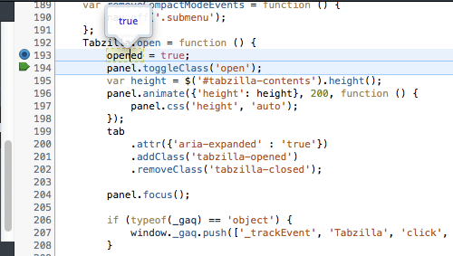
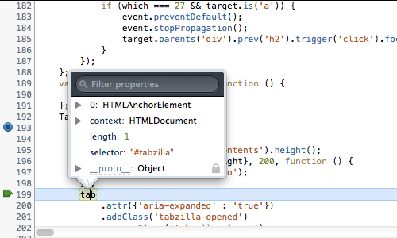
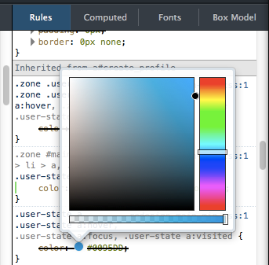
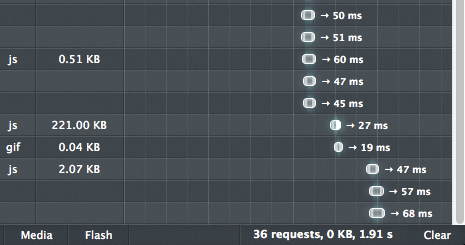
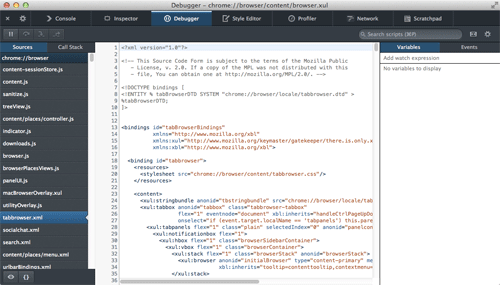

分割主控台、美化的壓縮 JavaScript ，還有更多功能
Firefox 開發者工具團隊正好趕上休假之前提供嶄新功能，讓你在休假期間也能順利開發專案。東西還不少，立刻來看看吧！
應用程式管理員 (App Manager)
應用程式管理員 (App Manager) 仍是 Firefox 28 與開發者工具團隊的首要重點。除了修正多個小錯誤並提升數個功能之外，現在更針對行動裝置添增二大功能：「安裝資訊檔編輯器」與嵌入式的工具箱。
安裝資訊檔編輯器 (Manifest Editor) 可讓開發者直接編輯自己 App 的 manifest 檔案。開發者可添增、刪除、編輯 manifest.webapp 內的欄位，再將之儲存回磁碟中。使用者再也不需離開工具亦可繼續改善 App 或進行除錯，獲得更全面的使用經驗。

應用程式管理員的另一項新功能，就是嵌入式的工具箱。現在不論是在 Firefox OS 模擬器 (Firefox OS Simulator) 或實體 Firefox OS 裝置上進行 App 除錯，工具箱就會以垂直的獨立「分頁」形式出現在管理員中，並顯示該 App 圖示以利開發者輕鬆辨別：

網頁主控台 (Web Console)
網頁主控台 (Web Console) 最大的改變，就是我們所稱的「分割主控台 (Split console)」功能。現位於除錯器 (Debugger) 內的任何頁面均可呼叫網頁主控台。如果你現正使用其他工具，又恰好需要主控台功能，則只要按下鍵盤的「Esc」，或點擊「切換分割主控台 (Toggle split console)」按鈕即可。下列短片即說明此功能：
我們不只強化主控台功能，同時也變更下列數個特色：
- 現已預設關閉 CSS 警告功能 ─ 在載入頁面時，CSS 警告現可為主控台新增數百條訊息。
- 針對除錯器目前所在的程式碼範圍內，主控台現可自動完成建議字串。
- 現可開啟/關閉訊息的時間戳記 (預設為關閉)。
- console API 現已新增 console.exception() 與 console.assert() 。
- 主控台另新增了暗色調主題。
除錯器 (Debugger)
因應多位開發者的要求，我們又為除錯器添增了二項功能。其一就是可美化 (包含上色並壓縮) JavaScript 檔案：

如果你想壓縮 JavaScript，或想從遠端網站取得壓縮過的函式庫，那絕對該使用此功能。只要點擊上圖所示的「Prettify Source」按鈕，即可獲得較佳、較易讀的檔案。
除錯器新增的第二項功能，就是可在除錯期間檢測變數的值。現在只要將滑鼠游標移至變數之上，就會彈出視窗並顯示目前的數值：

彈出視窗不僅可檢視簡單類別 (如上圖的 Boolean 值)，亦可顯示物件與 DOM 節點：

檢測器 (Inspector)
除了 Firefox 27 所提供的檢測器 (Inspector) 工具提示之外，現在又新增了其他功能：
- 規則檢視模式現在提供選色器 (Color picker) 工具提示對話框
- 我們另更新了工具文字的風格，更符合暗/亮主題
- 另根據開發者反應的意見，現在可調整工具文字的顯示時間
下圖即為選色器工具提示對話框：

好多新功能
新功能太多了，這裡先列出其中幾項報給你知：
- 網路監測器 (Network Monitor) 現在提供「清除 (Clear)」鈕。如果你極度依賴 Web API 來開發 App，則清除鈕對你應該特別有用：

- 針對平台與附加元件的開發者，我們現在擴充瀏覽器除錯器 (Browser Debugger) 的功能，並將之改名為「瀏覽器工具箱 (Browser Toolbox)」。開啟工具箱後即可看到多樣工具，如除錯器、主控台、檢測器、樣式編輯器、效能分析器、網路監測器、程式碼速記本：

原文連結：Split console, pretty-print minified JS and more – Firefox Developer Tools Episode 28